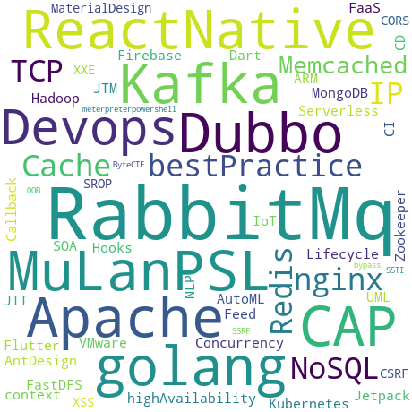

🔨开天辟地⚡
⭐手握日月星辰🌟
如何快速使用一些简单的开源项目
亲a🌹，什么是开源？
开源（open source），在互联网领域，可以简单理解为是“开放源代码”的简称。通常来说，指的是将软件项目的源代码向大众开放，允许大众获取、使用、修改和发行。在硬件等其它领域也可以套用开源的概念。
开源项目即开放源代码的软件项目，一个开源项目，可以不断对一款开源软件进行维护和升级，或者有可能在一个开源项目中，产出多款不同的开源软件（但很可能彼此有联系）。
看！，世界的人民热爱开源
教你如何精通女装(划掉)
https://github.com/komeiji-satori/Dress自由钢琴
https://github.com/WarpPrism/AutoPiano程序员也可以多才多艺
就问你秀不秀？？？
在线制作为所欲为的gif，斗图不用愁🤭
https://github.com/xtyxtyx/sorry正在烦恼找不到大项目做？
了解下这个？
https://github.com/justjavac/free-programming-books-zh_CN真香啊!!!
还是56.4k star的
好了，让我们回到正题
使用开源项目你需要的什么能力
README.md
良好的文档阅读能力
耐心阅读源码的能力
熟悉基本的项目开发规范
项目所使用技术相关的一些基础
当然你的编程基本功也要骚点
没有？现学现卖！
来看个使用了layui的玩具程序
https://www.layui.comtalk is cheap, show you the code !
聊下License
最后是关于学习的一些建议
搜索有道
搜索引擎是现阶段最好的“老师”
百度+思考+失败+科学上网(fq)+谷歌+尝试=解决
一专多长，先精后广
来看个反面例子
这家伙真菜啊！
熟悉好一个方向不会亏
简单学习下Git，使用Github探索无限的可能！
一开始这几个就够了
git clone
git add
git commit
git push
Markdown
Markdown Everywhere
当前主流编辑器
| Markdown编辑器 | ✅ | Yes |
| 富文本编辑器 | ❌ | No |
富文本弟弟我写篇文章容易吗我👎
VS
远离鼠标手😘
（开个玩笑（逃~~~
All in keyboard⌨
毕竟鼠标兄弟戳不了多久就得换，键盘比较耐揍🤣
Markdown流弊
趁手的工具
IDE + "纯文本"编辑器
!记事本
不要浪费太多的时间在选择工具上！
“微软出品，必属精品”
Join the developer community
认识更多志趣相投的伙伴，抱着大佬学习

对技术始终保持好奇心😥
太难了🙃


前端开发展望
明年3月，5G时代，超大带宽，WebGL?
three.js
学会分享
比如写写博文✒
维护博客，受益颇多

the end
感谢每一位来我博客留言交流的大佬和小伙伴
是他们的鼓励让我对技术的热情从未消减
🌹🌹🌹🌹🌹🌹